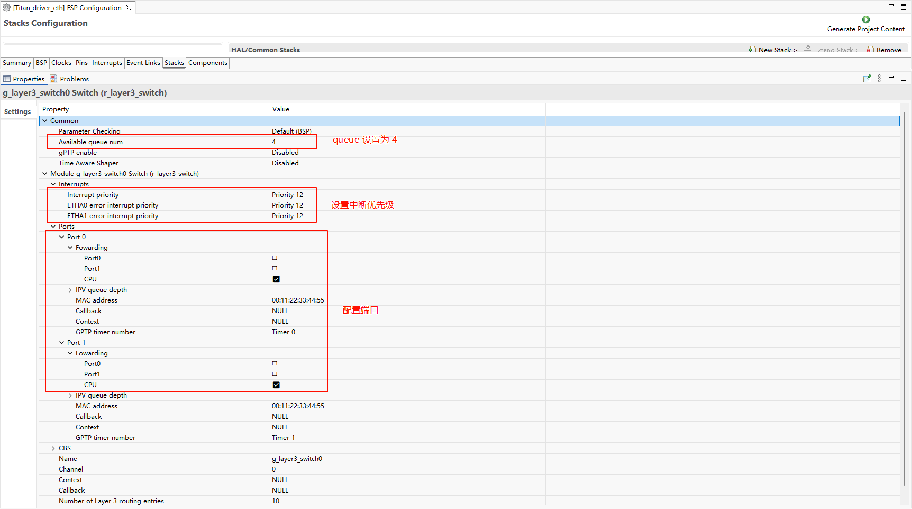
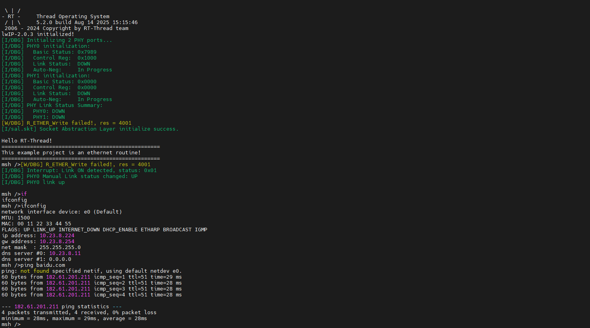
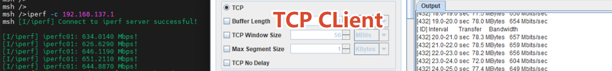
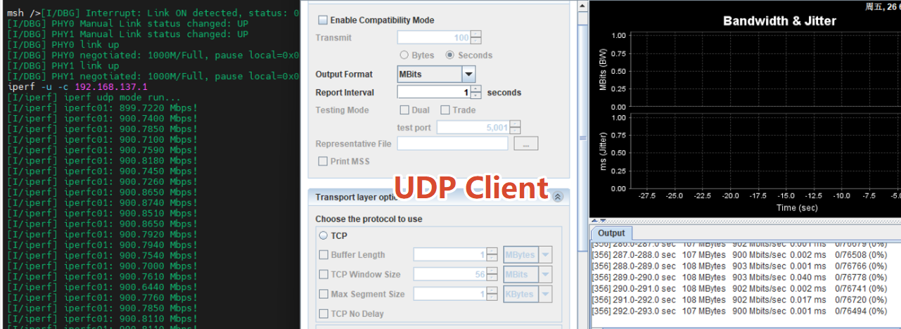

Ethernet Example Guide
Chinese | English
Introduction
This example demonstrates how to use the Ethernet interface on Titan Board Mini, combined with the RT-Thread Ethernet driver framework to implement network communication functions.
Key features include:
Initialize RA8 series Ethernet hardware
Configure IP address, subnet mask, and gateway
Send and receive Ethernet frames
Integrate RT-Thread
netdevframework for unified network device managementSupport DMA and interrupts for high-speed data transfer
Ethernet Overview
1. General Introduction
Ethernet is the most widely used Local Area Network (LAN) technology, proposed by Xerox PARC in the 1970s and later standardized by IEEE 802.3. Ethernet has the following characteristics:
Data transmission method: Frame-based packet switching, physically transmitted through twisted pair, fiber optic, or wireless media.
Topology: Traditional Ethernet used bus or star topology, while modern Ethernet mainly adopts star and tree topologies.
Protocol layer: Belongs to the data link layer (Layer 2) and physical layer (Layer 1) technologies of the OSI model.
2. Ethernet Frame Structure
Ethernet uses frames as the unit of data transmission. An Ethernet frame consists of the following fields:
Field |
Length |
Description |
|---|---|---|
Preamble |
7 bytes |
Used for frame synchronization |
Start Frame Delimiter (SFD) |
1 byte |
Frame start marker, value is 10101011 |
Destination MAC Address |
6 bytes |
Receiver hardware address |
Source MAC Address |
6 bytes |
Transmitter hardware address |
Type/Length |
2 bytes |
Upper layer protocol type or frame length |
Data Payload |
46~1500 bytes |
Upper layer data (e.g., IP packet) |
CRC Checksum |
4 bytes |
Cyclic redundancy check for frame integrity |
Minimum frame length: 64 bytes Maximum frame length: 1518 bytes (without VLAN tag)
RA8 Series Ethernet Features
RA8 series MCUs (such as RA8P1) integrate high-performance Ethernet MAC, supporting RGMII, RMII, and MII interfaces, providing stable and reliable high-speed network communication capabilities. The MAC can work with external PHY and is compatible with the LwIP TCP/IP protocol stack.
1. Network Interface Features
Interface Types
RMII (Reduced Media Independent Interface): Pin-saving, supports 10/100 Mbps
MII (Media Independent Interface): Standard interface, supports 10/100 Mbps
RGMII (Reduced Gigabit MII): Supports 10/100/1000 Mbps, high-speed interface for Gigabit Ethernet
PHY Connection
External PHY connected via MDC/MDIO interface
Supports auto-negotiation of speed and duplex mode
Can read and write PHY registers for configuration and status monitoring
2. MAC Features
Duplex and Speed Support
Full/half duplex
Supports 10/100/1000 Mbps (RGMII)
Supports auto-negotiation or forced configuration
Frame Processing
VLAN tag support (IEEE 802.1Q, optional)
Supports multicast and broadcast frame filtering
Hardware CRC generation and verification
MAC Address Management
Supports single or multiple MAC addresses
Can be dynamically configured via FSP or software
3. DMA and Buffer Features
Independent TX/RX DMA Engines
Supports simultaneous transmission and reception
Reduces CPU usage and improves throughput
Descriptor Queues
Configurable number of TX/RX buffers
Supports chained DMA for efficient large data transfer
Multi-buffer Management
Supports ring buffers for continuous transmission
Reduces packet loss
Hardware Acceleration
Frame filtering, length check, and CRC verification
4. Interrupt Mechanism
Interrupt Types
Receive complete (RX)
Transmit complete (TX)
Error interrupts (CRC error, buffer overflow)
Interrupt Configuration
Priority configurable via FSP
Supports RT-Thread ISR integration
Optimization
RX/TX interrupts can work with DMA
Selective interrupt enabling for improved performance
5. PHY Management
MDIO Interface
Can read/write PHY registers for configuration, reset, and status monitoring
Auto-negotiation
Supports speed (10/100/1000 Mbps) and duplex mode auto-negotiation
Link Monitoring
Detect link status (Up/Down)
CRC error and collision detection
6. Protocol and Stack Support
TCP/IP Protocol Stack Integration
Compatible with LwIP
Supports TCP/UDP/ICMP, DHCP client/server, ARP
Application Layer Support
Supports Telnet, HTTP, MQTT and other applications
Multi-thread safe, supports concurrent access
7. Performance and Reliability
Throughput Optimization
DMA + interrupts reduce CPU usage
Adjustable TX/RX buffer sizes
Reliability Features
Hardware CRC checksum
VLAN and multicast filtering reduce interference
Link detection and auto-reconnection
FSP Configuration
Note: This project uses FSP version 6.4.0. Please use FSP 6.4.0 when configuring FSP features.
Create new r_rmac stack:

Configure r_mac stack:

Configure r_layer3_switch:

Configure r_rmac_phy:

Configure g_rmac_phy_lsi0:

ETH0 pin configuration:

Note: All ETH-related pins need to have their drive strength changed to H.

RT-Thread Settings Configuration
Enable Ethernet in RT-Thread Settings.

Software Description
LwIP Performance Tuning Recommendations
The LwIP defaults in the upstream rt-thread/components/net/lwip/Kconfig are conservative (PBUF count 16, TCP send buffer 8196, etc.), which cannot fully exploit the throughput of the RA8P1 Gigabit Ethernet + DMA. After enabling RT_USING_LWIP (e.g. by ticking BSP_USING_ETH), it is recommended to manually tune the following values:
Option |
Default |
Note |
|---|---|---|
|
256 |
PBUF pool count (upstream default 16) |
|
4 |
RAW socket count |
|
24 |
UDP PCB count (upstream default 4) |
|
24 |
TCP PCB count (upstream default 4) |
|
512 |
TCP segment count (upstream default 40) |
|
65535 |
TCP send buffer (upstream default 8196) |
|
65535 |
TCP window size (upstream default 8196) |
|
6 |
lwIP main thread priority (upstream default 10; lower number = higher priority) |
|
144 |
lwIP main thread mailbox size (upstream default 8) |
|
2048 |
lwIP main thread stack (upstream default 1024) |
|
y |
No standalone TX thread (send path invoked directly to reduce context switches) |
|
5 |
Ethernet thread priority (upstream default 12) |
|
2048 |
Ethernet thread stack (upstream default 1024) |
|
144 |
Ethernet thread mailbox size (upstream default 8) |
To apply these recommended values, open RT-Thread Settings → RT-Thread Components → Network → lwIP in RT-Thread Studio, or edit the project’s .config directly.
⚠️ Memory footprint note: These options significantly affect RAM usage.
RT_LWIP_PBUF_NUM=256combined withTCP_SND_BUF/WND=65535reserves a substantial amount of heap memory at the defaultRT_LWIP_PBUF_POOL_BUFSIZE. Make sure your linker script reserves a large enough heap (≥ 256 KB recommended).
RTL8211 PHY Initialization
The Ethernet PHY chip initialization function is in ./board/ports/drv_rtl8211.c:
void rmac_phy_target_rtl8211_initialize (rmac_phy_instance_ctrl_t * phydev)
{
#define RTL_8211F_PAGE_SELECT 0x1F
#define RTL_8211F_EEELCR_ADDR 0x11
#define RTL_8211F_LED_PAGE 0xD04
#define RTL_8211F_LCR_ADDR 0x10
uint32_t val1, val2 = 0;
/* switch to led page */
R_RMAC_PHY_Write(phydev, RTL_8211F_PAGE_SELECT, RTL_8211F_LED_PAGE);
/* set led1(green) Link 10/100/1000M, and set led2(yellow) Link 10/100/1000M+Active */
R_RMAC_PHY_Read(phydev, RTL_8211F_LCR_ADDR, &val1);
val1 |= (1 << 5);
val1 |= (1 << 8);
val1 &= (~(1 << 9));
val1 |= (1 << 10);
val1 |= (1 << 11);
R_RMAC_PHY_Write(phydev, RTL_8211F_LCR_ADDR, val1);
/* set led1(green) EEE LED function disabled so it can keep on when linked */
R_RMAC_PHY_Read(phydev, RTL_8211F_EEELCR_ADDR, &val2);
val2 &= (~(1 << 2));
R_RMAC_PHY_Write(phydev, RTL_8211F_EEELCR_ADDR, val2);
/* switch back to page0 */
R_RMAC_PHY_Write(phydev, RTL_8211F_PAGE_SELECT, 0xa42);
}
bool rmac_phy_target_rtl8211_is_support_link_partner_ability (rmac_phy_instance_ctrl_t * p_instance_ctrl,
uint32_t line_speed_duplex)
{
FSP_PARAMETER_NOT_USED(p_instance_ctrl);
FSP_PARAMETER_NOT_USED(line_speed_duplex);
/* This PHY-LSI supports half and full duplex mode. */
return true;
}
Build & Download
RT-Thread Studio: Download the Titan Board resource package from the package manager in RT-Thread Studio, then create a new project and build it.
After compilation is complete, connect the development board’s USB-DBG interface to the PC, then download the firmware to the development board.
Running Effect
Insert the network cable into the Ethernet port, press the reset button to restart the development board. After waiting for PHY0 link up, enter ifconfig to view the IP address obtained by the development board, then enter ping baidu.com command for connectivity testing.

iperf Test
Open RT-Thread Settings, add the netutils package and enable the iperf tool.

After compilation and download, enter iperf -c host_IP -p 5001 in the serial terminal for iperf testing.

Network Application Examples
With the netutils package, TCP/UDP client and server send/receive tests can be performed.
TCP Client Test: The board acts as a client, actively connecting to a remote host to send and receive data.
UDP Client Test: The board acts as a client, sending to or receiving datagrams from a remote host.
